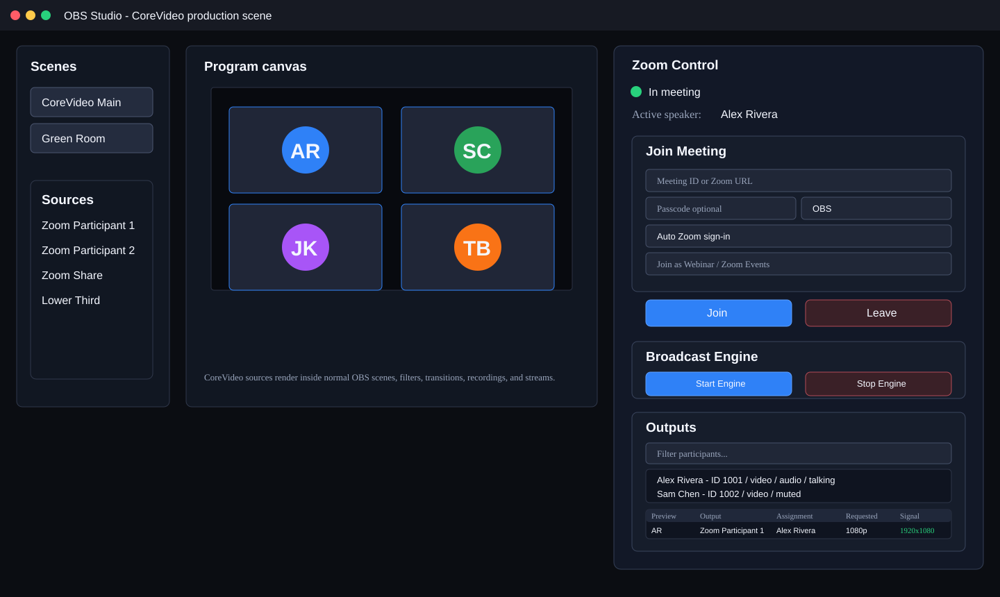
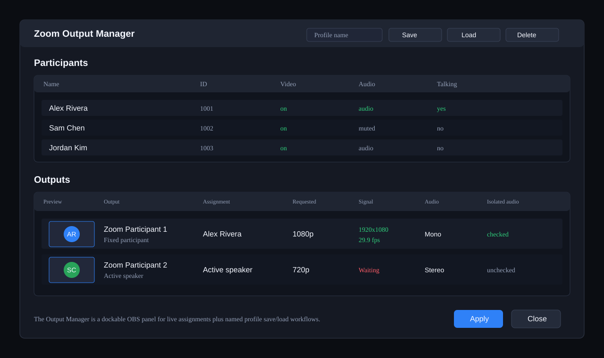

Core Plugin Functionality
This guide covers the main CoreVideo OBS plugin workflows. It intentionally focuses on the OBS plugin, ZoomObsEngine, Zoom source assignment, control APIs, audio routing, and ISO recording.
Media Architecture

CoreVideo keeps all Zoom Meeting SDK access inside the lightweight ZoomObsEngine helper process. The OBS plugin starts the engine, joins the meeting, and sends subscription requests over JSON IPC. Video and audio payloads move through named shared memory so large frames are not copied through the IPC pipe.
The plugin-side ZoomSource reads the shared memory frame, outputs it into OBS, and forwards the same copied buffer to optional plugin-side services such as ISO recording. This keeps the engine minimal and makes OBS/plugin features easier to test independently from the Zoom SDK.
What It Looks Like in OBS
The CoreVideo plugin is operated from inside OBS. These diagrams mirror the current core plugin controls: the Zoom Control dock, regular OBS scenes/sources, the Active Speaker Director controls, the dockable profile-oriented Zoom Output Manager, and the Zoom Participant source properties. Exact styling can vary by OBS theme and platform, but the controls and labels should match the current plugin. This guide intentionally describes the OBS plugin path; optional Sidecar control-surface features are tracked separately in the roadmap.

The Zoom Control dock joins and leaves meetings, starts and stops raw media, shows meeting state, lists participants, exposes Active Speaker Director controls, and opens the Output Manager for source assignment without leaving OBS.

The dedicated Zoom Output Manager is the primary assignment surface. It supports profile save/load workflows and exposes requested resolution, observed signal, frame rate, assignment mode, and audio routing information for each output. In v0.1.18 it is a persistent OBS dock, so operators can keep assignments, live previews, and feed health visible while working in normal OBS scenes.
Open the Zoom Diagnostics dock, or use Tools > Zoom Diagnostics to focus it, during a live session to see requested versus observed resolution, FPS, frame age, stale and quality retry counters, and the latest ZoomObsEngine debug events. This is the fastest way to see whether a source is waiting for frames, receiving a lower-than-requested feed, or being resubscribed by recovery logic. Use Create Support Bundle from this dock to write a redacted troubleshooting bundle with engine status, output health, recent debug events, plugin settings with tokens removed, and the latest OBS log when available.

Each Zoom Participant source can be configured independently for fixed participants, active speaker, spotlight slot, screen share, isolated audio, audience audio, resolution, video-loss behavior, and hardware conversion.
Joining Meetings
- Open OBS.
- Open Tools > Zoom Control.
- Enter a Zoom meeting ID or full Zoom join URL.
- Enter a display name.
- Use Auto Zoom sign-in for the published broker-backed flow.
- Click Join.
- Use the visible Zoom Meeting SDK window for waiting-room admission, self video/audio, and normal meeting controls.
- Click Start Engine after joining to request raw media from Zoom.
For external-account meetings, configure OAuth in Tools > Zoom Plugin Settings. Published builds use the embedded CoreVideo broker URL: the browser sign-in uses Zoom Public Client OAuth + PKCE, CoreVideo fetches the signed-in user's ZAK, and the helper authenticates the Meeting SDK with the embedded Marketplace Public Client ID as AuthContext.publicAppKey. End users do not enter client IDs or secrets.
Source Assignment
Add one or more Zoom Participant sources in OBS. Each source can follow a different assignment mode:
| Mode | Behavior | Common Use |
|---|---|---|
| Participant | Fixed Zoom participant ID | Dedicated guest ISO |
| Active Speaker | Follows the current active speaker | Host/speaker-follow shot |
| Spotlight Slot | Follows Zoom spotlight position 1..N | ZoomISO-style production |
| Screen Share | Follows active screen share | Slides/demo capture |
Each output reports observed resolution and frame rate through the output manager and TCP list_outputs command.
For a single directed speaker-follow output, add the dedicated CoreVideo Active Speaker OBS source. It follows the central Active Speaker Director and uses a two-slot handoff internally: the current participant remains visible while the next participant warms on a hidden slot, then the source cuts only after a valid frame is available.
Active Speaker Director
The Active Speaker Director is controlled from the Zoom Control dock. It is not just a pass-through of Zoom's raw active-speaker event; it builds CoreVideo's own production decision from the raw speaker signal.
The dock shows:
- Directed speaker: the participant currently being sent to active-speaker outputs.
- Raw speaker: the latest speaker reported by Zoom.
- Candidate speaker: the participant waiting out the sensitivity timer.
- Last speaker: the previously directed participant.
- Manual take/release: an operator supersede that holds a participant on air until released.
Timing controls:
| Setting | Default | Behavior |
|---|---|---|
| Sensitivity | 500 ms | Candidate must keep speaking this long before switching. |
| Hold | 2000 ms | Minimum time to stay on the current directed speaker after a cut. |
TCP examples:
{"cmd":"speaker_director_status"}{"cmd":"speaker_director_configure","sensitivity_ms":650,"hold_ms":2500}{"cmd":"speaker_director_take","participant_id":123456}{"cmd":"speaker_director_release"}Audio Routing
CoreVideo supports three audio modes for participant outputs:
| Routing | Behavior |
|---|---|
| Mixed | Full meeting mix |
| Isolated | Only the assigned participant's one-way audio |
| Audience | Residual one-way audio for participants not assigned to isolated outputs |
Use Isolated when you need the assigned participant only. Use Audience for a remaining-room or overflow mic channel after dedicated isolated sources have claimed named participants.
Auto ISO Recording

ISO recording is controlled by the OBS plugin, not the engine. When enabled, CoreVideo records one video file and one PCM WAV audio file per active source segment. A new segment starts when the resolved participant or source resolution changes.
Requirements:
ffmpegmust be available onPATH, or pass an explicitffmpeg_path.- Raw media must be active.
- Sources must be assigned to participant, active speaker, or spotlight modes.
OBS ISO Recorder Panel
Open Tools > Zoom ISO Recorder to manage ISO recording from a separate OBS dock. The panel provides:
- Output folder picker.
- FFmpeg executable field with a test button.
- Video encoder selector for CPU x264, NVIDIA NVENC, Intel Quick Sync, or AMD AMF when the selected FFmpeg build supports that encoder.
- Also start/stop OBS program recording toggle.
- Start ISO Recording and Stop ISO Recording buttons.
- Live status showing idle/recording and active session count.
- Active session table with source, participant, resolution, video frame count, audio chunk count, current video/audio file paths, and FFmpeg error details.
The panel uses the same ZoomIsoRecorder backend as the TCP and OSC APIs. It persists the output folder, FFmpeg path, and program-recording toggle in OBS global settings. Recording start is blocked when the selected output volume has less than 2 GB free and warns below 10 GB free.
TCP start example:
{"cmd":"iso_recording_start","output_dir":"C:/Recordings/CoreVideo","ffmpeg_path":"ffmpeg","record_program":true}TCP status example:
{"cmd":"iso_recording_status"}TCP stop example:
{"cmd":"iso_recording_stop"}OSC equivalents:
| Address | Type tags | Action |
|---|---|---|
/zoom/iso/start | optional ,s | Start ISO recording, optional output directory |
/zoom/iso/stop | none | Stop ISO recording |
Output files are written as:
*.mp4for encoded I420 video through FFmpeg using the selected H.264 encoder*.wavfor matching PCM audio
When record_program is true, CoreVideo also starts the normal OBS program recording and stops it when ISO recording stops, but only if CoreVideo started that OBS recording session.
TCP Control Examples
All TCP commands are newline-delimited JSON sent to 127.0.0.1:19870.
List participants:
{"cmd":"list_participants"}List outputs:
{"cmd":"list_outputs"}Output snapshots include requested resolution, observed resolution/FPS, stale state, last frame age, subscribed age for outputs still waiting on their first frame, recovery attempts, automatic quality-upgrade attempts, and remaining retry cooldowns.
Force a retry for stale outputs:
{"cmd":"recover_stale_outputs","force":true}Force a quality retry for live outputs below their requested resolution:
{"cmd":"upgrade_low_quality_outputs","force":true}Quality retries are skipped when a feed is already observed at 1080p.
Assign a source to a fixed participant with isolated mono audio:
{"cmd":"assign_output_ex","source":"Zoom Participant 1","mode":"participant","participant_id":123456,"isolate_audio":true,"audio_channels":"mono","video_resolution":"1080p"}Assign a source to active speaker:
{"cmd":"assign_output_ex","source":"Zoom Participant 2","mode":"active_speaker","audio_channels":"mono","video_resolution":"1080p"}Inspect and control the Active Speaker Director:
{"cmd":"speaker_director_status"}{"cmd":"speaker_director_configure","sensitivity_ms":650,"hold_ms":2500}{"cmd":"speaker_director_take","participant_id":123456}{"cmd":"speaker_director_release"}Assign a source to spotlight slot 1:
{"cmd":"assign_output_ex","source":"Zoom Participant 3","mode":"spotlight","spotlight_slot":1,"audio_channels":"mono","video_resolution":"1080p"}OSC Control Examples
List participants and outputs:
/zoom/list_participants
/zoom/list_outputs
/zoom/list_assignments/zoom/list_assignments replies with one /zoom/output/assignment message per CoreVideo source:
/zoom/output/assignment "CoreVideo Participant 1" "participant" 123456 "Alex Rivera" 123456 "Alex Rivera" 1 0Arguments are source, mode, configured participant ID/name, resolved participant ID/name, spotlight slot, and failover participant ID. Active-speaker sources resolve to the current directed speaker.
Retry stale video outputs:
/zoom/recover_stale_outputs 1Retry low-quality video outputs:
/zoom/upgrade_low_quality_outputs 1Assign a source:
/zoom/output/assign_ex "Zoom Participant 1" "participant" 123456 1Assign active speaker:
/zoom/assign_output/active_speaker "Zoom Participant 1"Set isolated audio:
/zoom/isolate_audio "Zoom Participant 1" 1Start and stop ISO recording:
/zoom/iso/start "C:/Recordings/CoreVideo"
/zoom/iso/stopTroubleshooting
| Symptom | Check |
|---|---|
| Color bars only | Confirm the meeting is joined, raw media is started, and the source has a participant/role assignment. |
| No isolated audio | Confirm the source is assigned to a real participant and isolate_audio is true. |
| ISO recording does not start | Confirm ffmpeg is on PATH or provide ffmpeg_path. |
| External meeting rejected | Confirm the Meeting SDK app/client ID is approved or published for external meeting joins. |
| Plugin cannot launch engine | Confirm ZoomObsEngine.exe and Zoom SDK runtime DLLs are installed under obs-plugins/64bit/zoom-runtime. |